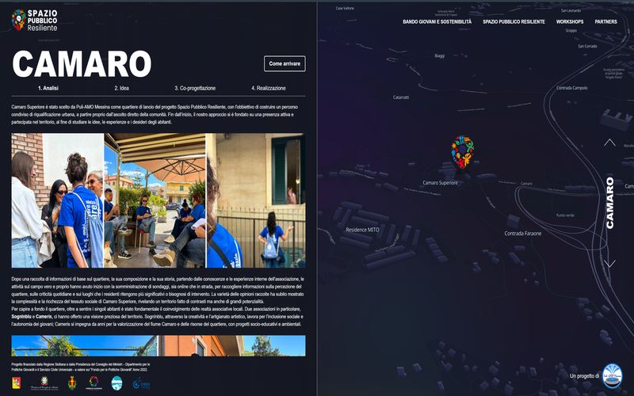
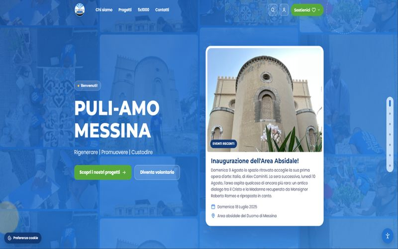
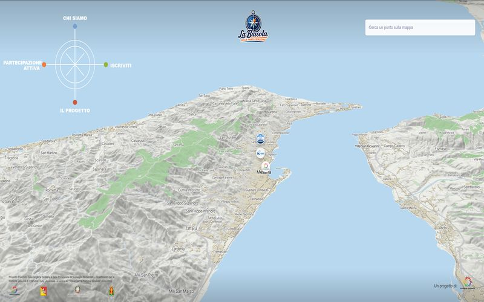
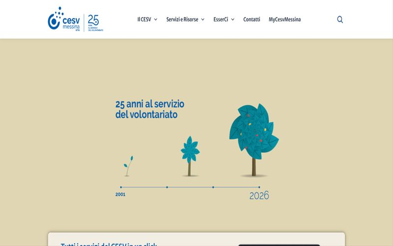
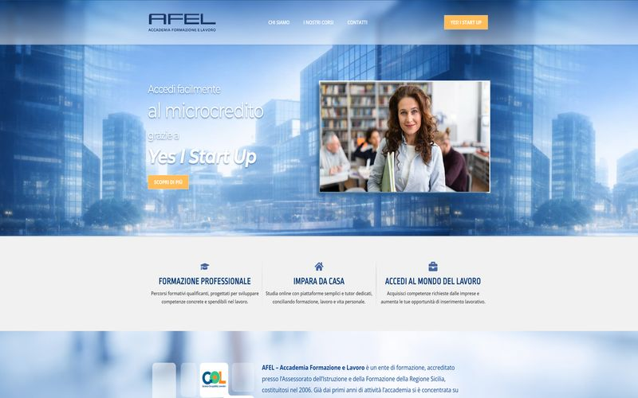

Spazio Pubblico Resiliente
Sito di un progetto finanziato dalla Regione Sicilia, con mappa interattiva e percorso di co-progettazione in quattro fasi.
Visita il sitoSono Marco Pignataro, consulente informatico a Messina. Capisco come lavori, poi costruisco gestionali, automazioni con l'intelligenza artificiale e siti che si modificano facilmente nel tempo. Per imprese, enti e agenzie, da remoto in tutta Italia.
10 anni di sviluppo software. Freelance con Partita IVA.
Ho sviluppato software per
Con l'intelligenza artificiale costruire e modificare software costa molto meno di prima. Per questo partiamo da quello che serve oggi, e lo cambiamo quando cambia il tuo modo di lavorare: con la facilità con cui una volta si cambiava una pagina di un sito.
Analizzo come lavorate, dove si perde tempo e quali strumenti servono davvero. Propongo solo quello che serve, spiegato senza tecnicismi.
Gestionali, web app e strumenti interni per ordini, clienti, soci, documenti e scadenze, costruiti per essere modificati ed estesi nel tempo.
Assistenti e agenti che fanno le attività ripetitive, come ricerche, raccolta dati, archiviazione e bozze, collegati agli strumenti che usate già.
Strumenti in funzione ogni giorno, non prototipi.
Ogni notte un sistema basato sull'AI cerca bandi e finanziamenti per tre profili diversi, verifica i requisiti di ammissibilità e prepara un'analisi in PDF per ogni opportunità. I risultati arrivano ordinati in un archivio consultabile.
Claude · Airtable · automazioni programmateAgenti AI che ogni mattina cercano nuovi clienti e opportunità, preparano bozze di messaggi e post, archiviano i documenti in arrivo, tengono le scadenze e mandano un riepilogo. Le decisioni e gli invii restano alla persona.
Agenti AI · Google Drive · Gmail · AirtableUna piattaforma web per gestire soci, volontari e attività di un ente del Terzo Settore, pensata per chi ha poco tempo.
Web app su misuraDimmi chi sei: ti mostro servizi, metodo e progetti pensati per te.
Scegli un'opzione per vedere i dettagli.
Parto da come lavori oggi: dove si perde tempo, quali dati raccogli a mano, quali programmi usi già. Poi costruisco quello che serve, un pezzo alla volta, e lo modifichiamo quando cambiano le tue esigenze.
Ti spiego tutto senza tecnicismi e ti propongo solo quello che ti fa risparmiare tempo o portare clienti.
Una mappa delle attività che si possono semplificare o automatizzare, con priorità e costi chiari prima di iniziare.
Strumenti su misura per ordini, prenotazioni, clienti, magazzino o documenti, accessibili da computer e smartphone.
Risposte ai clienti, raccolta e riordino di dati, preparazione di documenti e preventivi, collegati a email, fogli di calcolo e programmi che usi già.
Siti veloci e aggiornabili, negozi online su Shopify, WordPress o Magento. Esperienza su negozi di brand come Primigi ed Errea.
Un solo referente, passi piccoli e concreti, nessuna sorpresa in fattura.
Mi racconti l'attività e cosa vorresti migliorare.
Cosa conviene fare per primo, in quanto tempo e a che costo.
Partiamo dalla parte che ti fa risparmiare più tempo e la provi sul lavoro vero.
Correggiamo e aggiungiamo funzioni quando servono, senza ricominciare da capo.
Ne parliamo nella prima call, partendo dalle attività che ripeti ogni giorno. Ti propongo un'automazione solo se ti fa risparmiare tempo davvero.
Di solito no. Dove possibile collego quello che usi già, come email, fogli di calcolo, Google Workspace o il tuo gestionale.
Prima di usare uno strumento AI ti spiego quali dati tratta e dove finiscono. Decidiamo insieme cosa automatizzare e cosa no.
Dipende da cosa ti serve. Dopo una call di 20 minuti ricevi una proposta gratuita e senza impegno.
No, lavoro da remoto con imprese di tutta Italia. A Messina possiamo anche incontrarci di persona.
Dal 2023 coordino la comunicazione di un ente del Terzo Settore. Conosco i budget ridotti, il lavoro con i volontari, i bandi e le loro scadenze, e so quanto tempo si perde in burocrazia.

Strumenti pensati per chi ha poco tempo e tante persone da coinvolgere.
Gestionali su misura per soci, volontari, eventi e iscrizioni, con aree riservate e moduli online.
Ricerca automatica dei bandi, archivio dei documenti, promemoria delle scadenze, bozze di testi e rendiconti.
Su WordPress, semplice da gestire, con una formazione pratica per staff e volontari.
Se il sito o la piattaforma fanno parte di un bando, lavoro con le sue regole e i suoi tempi.
Siti e piattaforme realizzati per enti, associazioni e progetti del territorio.

Sito di un progetto finanziato dalla Regione Sicilia, con mappa interattiva e percorso di co-progettazione in quattro fasi.
Visita il sito
Mappa interattiva della città per la partecipazione attiva.
Visita il sito
Sito del Centro di servizio per il volontariato.
Visita il sito
Sito di un ente di formazione accreditato dalla Regione Sicilia.
Visita il sitoSito dell'associazione: progetti, eventi, volontariato e 5x1000.
Visita il sitoUn percorso semplice, con una sola persona di riferimento dall'inizio alla fine.
Mi raccontate l'ente, le attività e dove perdete più tempo.
Chiari e dettagliati, anche da allegare a un bando.
Vi aggiorno a ogni fase e raccolgo i vostri riscontri.
Vi insegno a usare gli strumenti in autonomia e li adattiamo nel tempo.
Sì, per le parti ripetitive: cercare bandi adatti al vostro ente, archiviare e ritrovare i documenti, ricordare le scadenze, preparare bozze da rivedere. Le decisioni restano a voi.
Sì. Preparo un preventivo con voci dettagliate da inserire nel piano dei costi e organizzo il lavoro sulle fasi del progetto.
Sì. Uso strumenti semplici e alla consegna vi formo, anche con volontari che non hanno esperienza.
Dipende da cosa vi serve. Dopo una prima call ricevete un preventivo gratuito e senza impegno, pensato sul vostro budget.
Sì, con Partita IVA e fattura elettronica. Lavoro da remoto con enti di tutta Italia.
Lavoro in white-label su WordPress, Magento con Hyvä, Shopify, React e Next.js, e integro assistenti e automazioni AI nei siti e nei gestionali dei vostri clienti. Dieci anni di e-commerce per brand come Primigi, Errea e Giunti Editore. Disponibile fino a 20 ore a settimana.
Senza assumere e senza formare nessuno: entro nel progetto, uso i vostri strumenti e consegno.
Un picco di lavoro, una scadenza ravvicinata, un collega in ferie. Aggiungi capacità solo per il tempo che serve.
Assistenti, automazioni e integrazioni con modelli linguistici da aggiungere ai progetti, senza costruire le competenze in casa.
Un tema Hyvä, un front-end in Next.js, un negozio Shopify da personalizzare: tecnologie su cui lavoro da anni.
Su progetti nuovi o già avviati.
Integrazione di modelli linguistici e agenti AI in siti, e-commerce e gestionali, automazioni tra servizi e flussi di lavoro.
Temi Hyvä, personalizzazione di checkout, pagine prodotto e categorie, componenti front-end su Adobe Commerce.
Certificazione Adobe Front-end Expert (2022)Temi e sezioni personalizzate, componenti React integrati nel negozio, come per i progetti Giunti Editore.
Temi e plugin su misura, versionamento con Git e deploy automatici.
Front-end di e-commerce e web app, componenti riusabili e documentati con Storybook, TypeScript.
Abituato ai ritmi di agenzia: ci ho lavorato per quasi dieci anni, tra ticket, sprint e revisioni.
Mi racconti progetto, scadenze e strumenti che usate.
Ricevi tempi e costi prima di iniziare, senza impegno.
Lavoro sul vostro repository e sulla vostra board: Jira, GitLab, Bitbucket, GitHub.
Codice pulito e documentato, revisionato con il vostro team.
In white-label. Lavoro sotto il vostro marchio: il cliente finale parla con voi, non con me.
Scegliamo insieme la formula più adatta al progetto.
Una funzionalità, un'integrazione o un sito con perimetro definito e un prezzo concordato prima di partire.
Per manutenzione, piccoli sviluppi e richieste ricorrenti dei vostri clienti.
Come estensione del vostro team, fino a 20 ore a settimana, con disponibilità da concordare.
Il preventivo è gratuito e arriva dopo la prima call.
Sì. Lavoro sotto il vostro marchio e non contatto i vostri clienti. Se serve, firmo un accordo di riservatezza.
Dipende dal perimetro e dai tempi. Dopo una call di 20 minuti ricevi un preventivo a progetto o a ore, gratuito e senza impegno.
Dipende dal carico del momento: te lo dico già nella prima call, insieme alle ore settimanali che posso dedicarti.
Sì, da Messina, con agenzie di tutta Italia. Mi adatto ai vostri orari, canali e strumenti.
Con Partita IVA, a progetto, a pacchetto di ore o a consuntivo mensile.
Consulente informatico e sviluppatore a Messina. Per quasi dieci anni ho lavorato in Synthetic Lab, un'agenzia web, sviluppando in outsourcing e-commerce Magento, Shopify e React per brand nazionali come Primigi, Igi&Co, Errea e Giunti Editore.
Dal 2025 lavoro da freelance: progetto software su misura e automazioni con l'intelligenza artificiale per imprese, enti e agenzie. Insegno informatica all'ITS Academy A. Volta e dal 2023 coordino la comunicazione di Puli-AMO Messina, un ente del Terzo Settore.
Bastano due righe su cosa vorresti migliorare e quando. Ti rispondo per fissare una call.
MarcoPreso in carico. Branch aperto sul vostro repository, aggiorno il ticket a fine giornata.